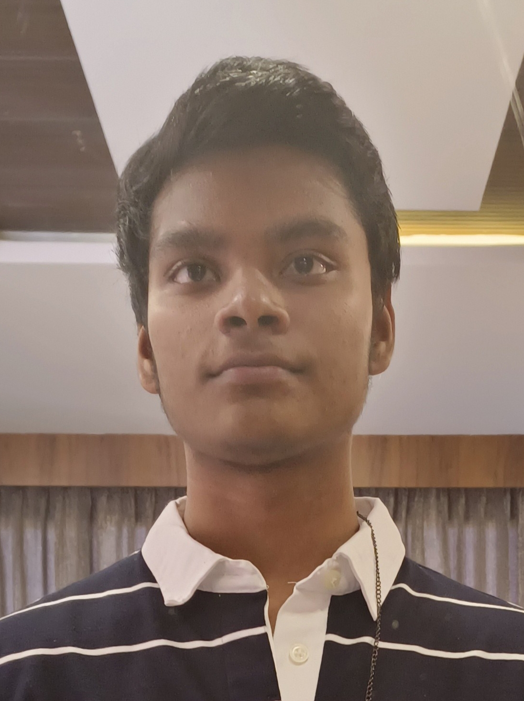

Sanjay S
Chennai, India | +91 9080559112 | ssanjaysalem@gmail.com | linkedin.com/in/sanjay-s | github.com/SanjayS037

Objective
Motivated and detail-oriented 2nd-year B.Sc. Computer Science student with strong foundations in programming, data structures, and creative problem-solving. Eager to combine technical knowledge with creativity to contribute to innovative projects in web development, AI, and digital design.
Education
- Bachelor of Science in Computer Science — SRM engineering college chennai (Expected may 2028)
- Relevant Coursework: Data Structures, Database Management Systems, Web Development, Operating Systems, Java Programming
Projects
- Personal Portfolio Website — (HTML, CSS, JavaScript) — Jan 2025
- Designed and deployed a responsive personal portfolio to showcase projects, skills, and artworks. Integrated a digital art gallery section to display original hand-drawn and digital illustrations.
- Chatbot for Symptom Checking — (Python, Flask, Gemini API) — Apr 2025
- Built a chatbot that takes user health symptoms and suggests possible conditions. Integrated external APIs for NLP processing and maintained conversation history in a database.
Skills
- Programming: Java, Python, JavaScript, SQL
- Web Development: HTML, CSS, Node.js, Express.js
- Database: MySQL, MongoDB
- Creative Skills: Hand Drawing, Digital Illustration, Concept Sketching
- Tools & Platforms: Git, GitHub, VS Code, Canva
Certifications
- Introduction to Java Programming — Coursera — 2024
- Web Development Bootcamp — Udemy — 2025
Extracurricular Activities & Achievements
Displayed original sketches at Nation Art Gallery 2024. Member of College Coding Club and participant in hackathons. Volunteered at Tech Fest 2024 to assist in organizing workshops and competitions.
Others